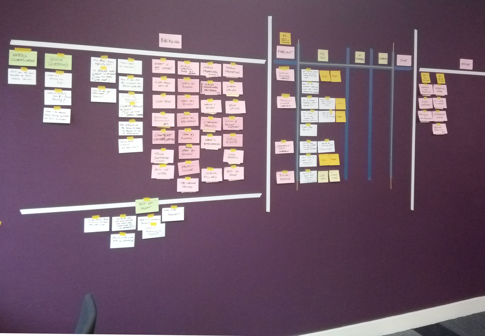
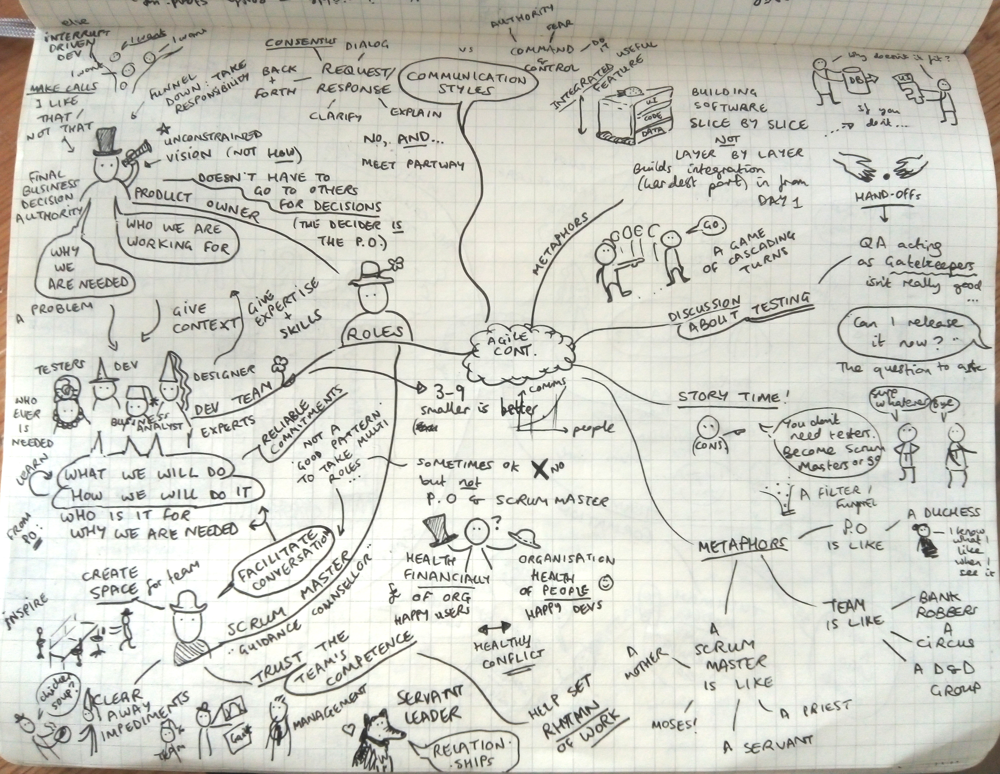
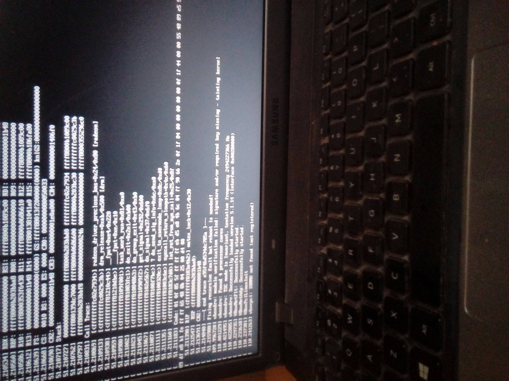
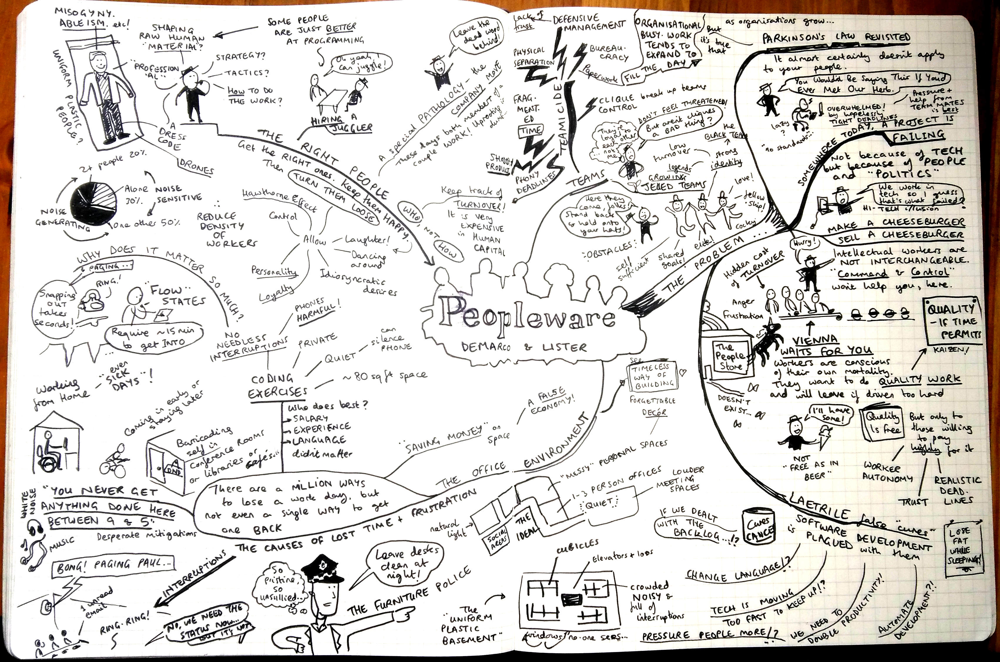

Sep 16, 2019
This is a write-up of a workshop I've given at CamPUG and PyCon UK 2019. It was a lot of fun to deliver, and my participants came away with their own mini-games written in Ren'Py. I was impressed by the range of creative stories, everything from getting lost in Cardiff, storming Area 51, coaxing a grumpy cat, visiting a music festival, going to space, defeating animated fleas, visiting every pub in Cambridge, a child's guide to the Divine Right of Kings, interactive graffiti and more!
I hope this post will be useful as a reference for workshop participants and those who couldn't make it along.
What is Interactive Fiction?
You might be familiar with the concept of interactive fiction from "Choose Your Own Adventure" books.
Ever since computers came on the scene there has been interactive fiction here, too. Zork, one of the earliest examples, is a dungeon-crawling game where the player explores The Great Underground Empire by typing text commands.
Using later tools like Parchment and Twine people are still creating these text-based interactive fiction games. A text-based game I've enjoyed recently is Moonlit Tower by sci-fi author Yoon Ha Lee.
Visual Novels are a genre of interactive fiction that combines pictures and text as a storytelling tool. They originated in Japan and many famous examples such as Fate/Stay Night and Symphonic Rain are Japanese. These games are often romance or relationship-themed, each path perhaps leading to a relationship with a different character.
Ren'Py

Ren'Py is a visual novel creation engine written in Python. It has its own syntax and style, but also allows you to embed pure Python for more complex gameplay mechanics.
It is cross-platform and works on Mac, Linux and Windows. All that you need alongside it is a simple text editor that can convert tabs to spaces, such as gedit.
What can you do in Ren'Py?
Label Jump For Branching Stories
I would humbly suggest my own game The Road Not Taken as a useful introduction to the label / jump mechanic. Take a look in the script.rpy file to follow how the game works. It demonstrates how menus work in the game and how you can use them to move to different choices, similar to a GOTO statement. It also includes an example of embedding music within gameplay to add a mood to a scene. Feel free to copy and modify it as a basis for your own games.
Custom GUI
Hotel Shower Knob, a game where you have to puzzle out an unfamiliar hotel bathroom to take a shower, is a good example of a custom GUI. Inside options.rpy the creator replaced the usual cursor with a custom image of a hand:
## The mouse clicker thingy.
define config.mouse = { 'default' : [ ('cursor.png', 66, 95)] }
This makes for a unique visual experience. As the hand is Creative-Commons licenced, you could use it in your own games, too!
Embedded Python
Because Ren'Py is written in Python (2.7, if you're interested) it's easy to embed Python statements within it to acheive more complex effects such as creating mini-games. There are two ways to do this - prefixing single lines with $ or using an indented block with the python: statement. I used python: statements within Ren'Py to create Card objects for my game Two Worlds.
The key thing to notice is the definition of the Card class:
# Define the card objects used to play the games with
init:
python:
flowers = ["card-front-land-flower%d.png" % i for i in range(1, 3)]
class Card(object):
def __init__(self):
self.face_up = False
self.selected = False
self.number = 0
self.coords = [0, 0]
self.back = "card-back-land.png"
self.front = flowers[0]
self.paired = False
@property
def coord_text(self):
return "{}, {}".format(self.coords[0], self.coords[1])
This happens during the init: block, before the game starts, so it is available from the beginning. I subsequently used this in the sea_game.rpy and land_game.rpy files using the ui.interact() statement and action If to connect it with Ren'Py responses to on-screen clicks.
Persistent Data
Another useful trick is the ability to store persistent data between plays of the game.
An example from Long Live The Queen
This allows more satisfying gameplay such as unlocking new routes after a complete playthrough, and keeping track of player stats like Strength or Skill. Anything that can be pickled is suitable for this treatment. A simple example:
if persistent.secret_unlocked:
scene secret_room
e "I see you've played before!"
To unlock this path the user must hit a piece of code that sets $persistent.secret_unlocked = True
persistent is a special keyword in Ren'Py, so you shouldn't use it for anything else. Unlike other variables, if you haven't yet initialised it when you reach the if statement Ren'Py won't complain.
Useful sources of free images and sounds for your games
There are various community projects to collect images and sound to use in games with Creative Commons or similar licences.
I've found px here a useful collection of images, particularly photos.
I used Fraqtive to create the card images and backgrounds for Two Worlds.
Useful sound sources include Free Music Archive and for sound effects, Free Sound
Example games written in Ren'Py
Benthic Love – Michaela Joffe, Sonya Hallett
Hotel Shower Knob – Yoss III
Death And Burial Of Poor Cock Robin – Lernakow
Long Live The Queen – Hanako Games
And check out the NaNoRenO game jam each year during the month of March – or better still, take part!
Click to read and post comments
Apr 12, 2019
I recently attended a Certified Scrum Master course taught by Tobias Mayer of Adventures With Agile. I really enjoyed the course and the style in which it was taught. There was no death by Powerpoint! Tobias actually constructed a board on the wall with columns to keep track of the tasks comprising the course, and we added extra task cards for further discussion and questions as we went along.

Here's what the board looked like near the start of the two day course.
We held 'Sprints' of an hour or so at a time, diving into aspects of Agile and then reviewing how it went, to improve our group process. Sometimes the teacher would stand and talk about a concept for a while, but mostly the course was interactive, especially during the second day where we broke out into groups for longer sessions.
The exercises we did included 'Point and Go': a game where players stand in a circle and have to
Point to someone else whose place you want to take
Wait for them to say "Go"
Start moving forwards to them
Before you reach them, they have to find another place to go (and the cycle continues!)
This was unexpectedly hard! It was a metaphor for how difficult it can be to break out of an established pattern of behaviour at work. Even once we got into a rhythm, if things sped up or someone panicked, our orderly pattern fell apart.
Another exercise I enjoyed was coming up with different metaphors for Scrum. We broke out into groups and thought up some different ideas - I was impressed by the variety and how each of them fitted different parts of what Scrum can look like. Some of my favourites were:
a garden growing and changing over time
a cocktail bar developing new drinks
a stand-up comedian working on their routine
a graffiti crew making a work of art for their neighbourhood
* Jurassic Park (this was mine!)

A mindmap from my notes about the different Scrum roles
Following the training, I'm a Certified Scrum Master. There have been some intelligent criticisms of this certification process, including by some of its founders. The fact that there is a certification exam seems to somewhat devalue the training experience itself. I didn't really need to complete the training to do the certification exam - its questions are purely based on the Scrum Guide and a few on the Agile Manifesto. How well can a multiple-choice test about a short document really hope to measure someone's competence in such a fuzzy relationship-centred domain as taking on the role of a Scrum Master? It's always going to fall short, I think. I've acted as a Scrum Master for several years already without the certification, so I was interested to see what it covered and didn't touch on.
I passed the exam. But the things that will really stay with me are the advice of the trainer and the discussions I had during the course, especially with others whose companies are also on the path to adopting more Agile practices. I certainly recommend Tobias as a teacher: his creative exercises and the way he presented the course helped grow my understanding and confidence in the role of Scrum Master. I'd like to attend his Scrum Master Clinic - I think it will really help to have that ongoing mentoring and peer advice.
Feb 10, 2019
I recently started to learn about flex and Bison - a set of parser creation tools for C, C++ and Java. By specifying the grammar and rules for parsing inside two files, blah.y and blah.l, the flex and bison command-line Linux tools will auto-generate an appropriate parser in your chosen language. As you might imagine, this is very handy.
Since it's generally better to show rather than tell when it comes to software tools, here's a toy project I've been playing with in which I'm using them to parse GCODE.
The flex part is what's called a lexical analyser - it uses regular expressions to split the input into tokens. These tokens are used to generate a parser with the Bison part, which is the grammar that tells the parser what do do when certain tokens are read side by side.
What particularly struck me about these tools was just how old they are.

Bison is a descendant of a tool called Yacc (Yet Another Compiler Compiler) which was developed by Steven Johnson working for Bell Labs back in the early 1970s, inspired by Donald Knuth's work on LR parsing. It has been rewritten in many different languages over the years, but the most popular implementation these days is probably Bison, which dates back to 1985, when it was worked on by Robert Corbett. Richard Stallman (yes, that Richard Stallman) made the GNU-Bison tool Yacc-compatible.
Flex meanwhile was written in C by Vern Paxson in 1987, tranlating an older tool called Lex. Lex was originally written by Mike Lesk and Eric Schmidt, and described in a paper by them in 1975. It was initially written in ratfor, an extended version of Fortran popular at the time.As they point out in the paper:
"As should be obvious from the above, the outside of Lex is patterned on Yacc and the inside on Aho’s string matching routines. Therefore, both S. C. Johnson and A. V. Aho are really originators of much of Lex, as well as debuggers of it. Many thanks are due to both. The code of the current version of Lex was designed, written, and debugged by Eric Schmidt"
As you might expect of such venerable tools, they have some excellent tutorials on their use, including an O'Reilly book "flex & bison" - which itself is the "long awaited sequel" to the O'Reilly classic, "lex & yacc". Those who teach in depth about these tools or about parsing are in some danger of re-writing them even more nicely in a favourite language - the linked example is PLY, which was originally developed in 2001 for use in an Introduction to Compilers course where students used it to build a compiler for a Pascal-like language.
I'm fascinated by how tools like this have survived and thrived over what, to computer science, is an enormous amount of time. Perhaps it is because they are beautiful - they have some inherent quality that shines out, no matter what language they happen to be in. I was re-reading the interview with Fran Allen in 'Coders At Work' about beautiful code, and it really resonated.
Allen: One of the things I remember really enjoying is reading the original program - and considering it very elegant. That captured me because it was quite a sophisticated program written by someone who had been in the field a while - Roy Nutt. It was beautifully written.
Seibel: What makes a program beautiful?
Allen: That it is a simple straightforward solution to a problem; that has some intrinsic structure and an obviousness about it that isn't obvious from the problem itself. I picked up probably a new habit from that of learning about programming and learning about a new language by taking an existing program and studying it.
Seibel: How do you read code? Let's say you're going to learn a new language and you find a program to read - how do you attack it?
Allen: Well, one example was one of my employees had built a parser. This was later on for the PTRAN project. And I wanted to understand his methods. It's actually probably the best parser in the world - now it's out in open source, and it's really an extraordinary parser that can do error correction in flight. I wanted to understand it, so I took it and I read it. And I knew that Phillipe Charles, the man who had written it, was a beautiful programmer. The way I would approach understanding a new language or a new implementation of some very complex problem would be to take a program from somebody that I knew was a great programmer, and read it.
Dec 31, 2017
My colleagues and I were discussing legacy code the other day. Someone gave the pretty common opinion that, if there was time, they would of course completely re-write all the legacy code they came across, from scratch. But, since this is not an ideal world and time is limited, they would settle for refactoring what they could. It got me thinking about how my own attitude toward legacy code has changed over time, and why that is.
Indiana Jones and the Lost Code
I spent one summer at university working on a classic legacy code problem. A scientist had written a large piece of Fortran 95 to simulate a manufacturing process for my employers. He had long since retired and there was no way to contact him to ask about his work. As an intern I was asked to add a little bit of extra functionality. They were still using the code and found it reliable, but wanted to add a feature. I felt like an archaeologist, dusting off terse variable names and cryptic comments, trying to understand not only this code but the complex processes it was simulating, too. It was very difficult to get anywhere.
 I wonder if I can replace this function without adding test coverage?
I wonder if I can replace this function without adding test coverage?
My initial reaction - rewrite it! I think most programmers share this instinct. My idea was to tear it down completely and rebuild it, preferrably in a different, more modern language. Then, I felt, I could add the features that were needed. But my manager was adamantly against this. As a summer intern, I would leave soon anyway. If I rewrote the code in another language, where was the benefit to the company? From their perspective, they already had a tool that worked fine. They just needed someone to understand what they already had and improve it a bit. At the time I was frustrated by this. I would tell others the tale with a wistful air - "If only I had had the time to rewrite it properly" I would think, "it would have been so much better". But would it have?
Why Rewrite Code?
I've come across a few different reasons for re-writing code completely. None of them really convince me of their merits anymore.
- To write it in a new language.
The new language is considered to be 'better' - it has features you want, or the old language is considered passe. Fortran 95 certainly wasn't the best language to be writing new code in anymore! For one thing, there was a severe restriction on variable and routine name lengths - in order to maintain backward compatibility with earlier versions of the language, none of the variables was over 6 characters in length, which didn't aid readability. But most cases aren't as clear-cut as this - I think most people wouldn't choose to re-write a large C program in Rust even if they think Rust is a superior language in some respects.
No-one can figure out how the old code works, so we have the idea to learn by doing and completely rewrite it. It's certainly "easier to write code than read it." This is even true of one's own code - returning to something I wrote six months ago, I realised to my regret I left insufficient comments and good names behind - so I had to learn how to understand my own code again, refactoring some of the names once I had worked out what I was doing. But by the same token, if you re-write others' code, there's no guarantee it will be any more readable to the next person - even to yourself, later on. Taking more time to read and understand what the existing code is doing may end up being more valuable. Perhaps one of the problems with this approach is that programmers feel guilty for spending some of their work time 'just reading' other people's code. It doesn't feel like a productive activity in the same way as re-writing. Reading old code just produces understanding in your mind, no tangible output.
- You don't trust the people who wrote the code.
'Not Invented Here' syndrome. Especially since many programmers have poor code reading skills it's difficult to relax and trust unknown programmers. We can't easily just grok their code and be reassured that it's solid - so fear creeps in and the idea of a complete re-write or making our own version from scratch seems more appealing. If your instinct is not to trust the unknown, it becomes even harder:
"You can’t look down on someone when you read their code. If you don’t respect the person writing the code, you won’t be able to apply the energy needed to understand it." - Keiichi Yano @CaptivNation
In the Python world this has mostly been overcome when dealing with third-party modules - for some reason, if you can pip install a library function to do what you want, there isn't the same need to question and look under the hood in mistrust at how it does what it does. The module is generally treated as a black box, whose documentation is all you need to work with it. Perhaps this trust has been built up in the Python community over time and isn't readily extendable to other domains - it's certainly a large factor in the appeal of Python as a language.
And finally the real reason, the one we feel deep-down in our bones: the old code looks bad - it's flaky, it doesn't have any test coverage, the relationship between the parts looks crazy. When you read it, you sometimes want to laugh out loud - it's a big hot mess. There is a strong temptation to start again from scratch out of an aesthetic instinct for perfection.
Why Keep Code?
Joel Spolsky of Joel on Software fame has called rewriting source code from scratch "the single worst strategic mistake that any software company can make". Spolsky uses the example of Netscape 6.0 to demonstrate why as a corporate strategy, complete re-writes are almost never a good idea. They tend take longer than anticipated (because people are bad at working out how long it will take), and burn time and resources for no appreciable reward until the very end when the new code is ready - by which time, a competitor has probably caught up to you and eaten your lunch. There are almost no commercial examples where a complete re-write turned out to be a good idea. Sometimes as a programmer you need to 'zoom out' and take a more general view of your company's trajectory, and how time spent on re-writes and refactoring fits into it.
Of course, companies also need to take care not to pressure their programmers into behaving in this negative way. If you're rewarded based on new code output or some other metric that doesn't take into account the increase in understanding from reading others' code, it can be hard to fight the instinct to re-write code more than you should. Managers should try to grow their programmers' understanding of the existing codebase and allow time for them to read code as an activity of value in itself. Taking a leaf from Peopleware and accepting that 'human resources' are individuals who are not interchangeable and who contain valuable institutional knowledge should help here.
As Joel also points out, 'hairy' legacy code functions embody years of bug fixes and reactions to specific situations. But not only that. Legacy code often embodies knowledge about a process, knowledge that is very difficult to recapture. The writers might have left the company, or been run over by a bus! Re-writing doesn't recapture all the nuances of the understanding embedded in the old codebase, and can leave important institutional knowledge behind. This knowledge might not be documented in any other way. I've lost count of the times an old comment or variable name has led me in a valuable direction to a deeper understanding of changes to our hardware, for example. This sort of thing would be lost, throwing the baby out with the bathwater, if the code had been completely re-written by someone who didn't keep the old comments they didn't understand.
- Refactoring can give the best of both worlds
It can be difficult to get the balance right between too many re-writes on the one hand and leaving flawed, buggy existing code alone on the other. My own experience at CMR has definitely taught me the value of keeping and improving on an existing codebase. Through resisting the temptation to stop and completely re-write parts of the Python codebase, we have come further and faster than we could have done otherwise, and managed to still continue improving as we go along. Refactoring is sometimes used as a synonymn for re-writing, but it's actually a different approach. Refactoring values existing code and makes the base assumption that it is valuable and should be preserved. By adding tests, old code can be refactored with the confidence that bugs won't be introduced. Tweaking variable names and adding explanatory comments is generally harmless and can be very valuable. In this way, incrementally refactoring old code can give excellent results, in less time than a complete rewrite. Your Code as a Crime Scene explains how making improvements to the code can and should be done in a targeted way, rather than by hunches. By focusing on areas with the highest cyclomatic complexity and churn, we direct our energy where it produces the most valuable results. This means the majority of the existing legacy code can be left alone, while still significantly improving the functionality and test coverage.
A Book Recommendation
In the course of my research for this post I came across Code Reading, a book about precisely the discipline reading legacy code in order to maintain it and add features. This looks to be a great primer on a neglected skill for programmers. I plan to read it myself and leave a review here in the New Year.
Oct 30, 2017
I spent the last few days at PyCon UK, and thought I'd write a post about my experiences there. It was my first time at the conference and I thoroughly enjoyed it, as you can probably tell from the liberal number of exclamation marks scattered through this post.
I gave a talk!
On the first day of the conference I spoke about Python As a Second Language. The organisers put me in the Biggest Room so I had to fight off some pre-talk nerves,
but I was glad to have the chance to do it and got some lovely feedback afterwards. Thanks again to Emma Gordon for encouraging me to give it a go and push my comfort zone! Doing a talk on Thursday also meant I was free to enjoy the rest of the conference without worrying, which I definitely recommend.
For those who are interested, a video of my talk is now up on YouTube!
I went to talks and workshops!
The conference was full of great talks and sessions, so this is just a small sampling of what I particularly remember enjoying. Of course, I'd like to give a shout-out to my colleagues Emma Gordon and Jan Chwiejczak who respectively gave the very silly and fun Python Spelling Bee, and a (very oversubscribed) workshop on Python Bytecode & lavishly illustrated talk on the Art of Testing.
-
Unsafe At Any Speed Rae Knowler made some great points about dangerous library defaults, illustrated with scary examples from the wild. I'll be sure to use PyYAML.safe_load() rather than load() from now on...!
-
Shaping the World David McIver's keyote was thought-provoking and fascinating, not just about software, but ethics, history and human interactions - the sort of thing Stuart Wray would probably enjoy.
-
Docs or it didn't happen! I was encouraged to join the Documentarian Club by Mikey Ariel, who gave an inspiring talk about why good documentation is so important.
-
Software's Seven Deadly Wastes Jez applied the Toyota Production System's 'Seven Wastes' concept to software engineering beautifully - pleasing my manufacturing engineering heart and giving me some food for thought.
-
Circumnavigating the Antarctic with Python and Django A fascinating talk that cast a light on the challenge developing with no (or a very patchy) Internet connection. What, no googling for StackOverflow posts?! Carles and Jen managed data for 22 scientists on a trip circumnavigating the Antarctic, and built them some useful tools as well like an intranet 'Facebook' and web portal to enter their latest data.
-
The micro:bit talks I discovered from the team at the micro:bit foundation how the BBC micro:bit is being used by teachers and for STEM outreach. It's a great project and it sounds like it's already having a lot of success getting kids into learning to code in an accessible way.
-
Choo choo! All aboard the Data Train! It turns out there is a lot of open data available from TfL and National Rail about train movements in the UK. The talk went by quickly but I'll definitely be rewatching to get inspiration for my next project!
-
Lightning Talks One of the highlights of the conference was the range of lightning talks at the end of each day. Among much else they gave me a great brownie recipe, book recommendations and a moment of meditation calm. A particular favourite was the children's lightning talks - they were so confident speaking about their projects, it was lovely to hear.
The nice thing about PyCon UK is that they video all of the talks in the Assembly Room, so I'll be able to go back and watch the ones I missed over the next few weeks, and learn more from the ones I went to.
I didn't take part in many workshops as I was busy manning the CMR stall (we were one of the sponsors so were giving away some free trinkets). I did really enjoy Alex Chan's A Plumber's Guide To Git workshop - I think it really helped unpack the inner workings of Git for me. At the end I started to understand what's going on 'under the hood' when I git add and git commit and it's really neat.
I got swag!

As well as this snazzy pair of Python socks as a thank-you for giving a talk, I also picked up a free BBC micro:bit delightfully packaged in a sweetie-bag and enjoyed playing with it. For such a small bit of kit is has a surprising range of functions, including an accelerometer, 25 LEDs with variable brightness, two buttons and some I/O. I look forward to using it for embedded projects!
I met new people!
One of the best things about PyCon was a chance to meet people using Python from around the UK (and further afield). It was inspiring to see how the language is being used by all sorts of folks. Everyone was friendly and welcoming, and it was a great place to give a talk. I also got the chance to spend more time getting to know people I already was acquainted with from CamPUG, the Cambridge Python Users Group, and had some really interesting discussions.
If anyone is thinking of going but isn't sure if it's for them, I'd really reccomend giving PyCon UK a try - the environment is relaxed and friendly, and the organisers try hard to make everyone feel welcome and included. I'll definitely be coming back next year!
Sep 10, 2017
Hello! First of all, I'm not dead (for all three loyal followers of this blog!) I got a fantastic new job at Cambridge Medical Robotics as a full-time Python developer, and have consequently had rather less free time for code musings lately. It's been about five months since I first joined and I'm finally starting to emerge from the new-job haze and find my bearings again. In fact, I had time to break my laptop - and fix it again - which is what I wanted to talk about today.
What happened?
I finally found the free time to update my laptop from Ubuntu 12.04 to the latest version of Ubuntu LTS (16.04) a weekend or so ago. I had been seeing the suggestion to update coming up for a while (... nearly a year, it turns out!) and ignoring it. But because I couldn't make a new game run with my old version of Ubuntu without installing a bunch of updates anyway, I finally decided to bite the bullet and do the full upgrade. I'd heard mixed things about how well the transition between versions went for other people, and I was also concerned about keeping my windowing appearance the way I like it, so I knew this would take a while and probably not be straightforward. I backed up my data and even made a list of the useful programs I currently have installed, in case things completely went sideways. What I was hoping not to encounter was ...

Anyone who uses an open-source OS will be familiar with this situation. There you are, sitting in front of what was once a beautifully working machine, questioning all your choices and trying to find out how to fix whatever the problem is. The spinal reflex of Linux is the command line. It's what's left when things go wrong. As Neil Stephenson's excellent In The Beginning Was The Command Line reminds us (although here he is actually talking about Windows vs Macs):
"when a Windows machine got into trouble, the old command-line interface would fall down over the GUI like an asbestos fire-curtain sealing off the proscenium of a burning opera. When a Macintosh got into trouble, it would present you with a cartoon of a bomb, which was funny the first time you saw it."
Why even choose Linux?
My motivations
When I got my first laptop as I was about to go to University, I decided to try dual-booting with Ubuntu (it was a Windows machine originally). Mainly it was an experiment - I'd heard that there were some cool coding tools available for Linux systems and I wanted to see what it was like on the other side. I was also kind of a cocky teenager and liked the idea of using a niche, obscure system, customising my laptop in some way. And, most importantly, I had a lot of free time - I took a year out before going to Uni, so aside from working in a gift shop (which didn't occupy my mind that much) I was able to spend time fixing up my laptop the way I wanted. After the inevitable teething problems, I got an installation I was happy with, and enjoyed it so much I ended up just using Ubuntu as my primary system and abandoning the idea of doing dual boot. I kept my system Ubuntu all through college, and though I was sometime concerned I wouldn't be able to complete assignments with it, I was pleasantly surprised by tools such as OpenOffice, which allowed pretty seamless integration with Word, Powerpoint etc. I also had a leg-up on some of my classmates, as when I got to Uni it turned out that the machines in our department all ran Linux installations, too. So I never really had a problem there.
Common fears
But what if there are bugs and I don't know how to fix them? I'm not some l33t hacker!
Returning to In The Beginning Was The Command Line, which really is a stupendous essay, we find a wisdom about bugs which definitely still holds out. Whatever OS you are running will not be perfect. There will be problems from time to time, and you will try to learn how to fix those problems. Neal Stephenson compares the OS situation to a crossroads with different competing auto-dealerships. Customers come there and 90% go straight to the station-wagon dealership (Windows).
The group giving away the free tanks only survives because it is staffed by volunteers, who are lined up at the edge of the street with bullhorns, trying to draw customers' attention to this incredible situation. A typical conversation goes something like this:
Hacker with bullhorn: "Save your money! Accept one of our free tanks! It is invulnerable, and can drive across rocks and swamps at ninety miles an hour while getting a hundred miles to the gallon!"
Prospective station wagon buyer: "I know what you say is true... but ... er... I don't know how to maintain a tank!"
Bullhorn: "You don't know how to maintain a station wagon either!"
Buyer: "But this dealership has mechanics on staff. If something goes wrong with my station wagon, I can take a day off work, bring it here, and pay them to work in it while I sit in the waiting room for hours, listening to elevator music."
Bullhorn: "But if you accept one of our free tanks we will send volunteers to your house to fix it for free while you sleep!"
Buyer: "Stay away from my house, you freak!"'
With an open-source OS like any of the Linux flavours, hundreds of people will be able to help you, and a solution will probably already exist online. StackOverflow and other such repositories of knowledge are great, as are reading the manuals and docs for specific tools you want to use. Whereas proprietary OS vendors are naturally interested in
a) Convincing consumers that there are no problems with their product (particularly security problems!)
b) Convincing shareholders that their product is commercial (not 'giving anything away for free') and worth paying money for
I don't think I can keep up with the skills you need to run an OS like that
Not going to lie, this can be a barrier. If you're like me and don't enjoy change, the process of continually needing to update and patch your open-source OS can be scary. You ask yourself - what if it doesn't work next time? You think about how you already voided the warranty on your machine by installing this crazy free OS and you question whether you'll be able to fix it.
To this I have several suggestions:
- Use an OS which has widespread adoption and is known to be easier to maintain, such as Ubuntu. I began with Ubuntu and continue to stick with it despite some gripes, because the canonical system does make it so easy to install the patches and updates you need to keep rollin'. Plus, the version system means you can go several years without needing to do a major upgrade.
-
Cultivate technically minded friends who can advise if things go very wrong. This can be online or off - Ubuntu has a warm community of volunteers who staff the forums and are generally very helpful and kind to newbies. If you're a student there is often at least one l33t sysadmin in your department who Knows The Ways of Linux and they are generally happy to help - perhaps in trade for chocolate! Depending on where you work your colleagues may be able to help out, too. Linux users tend to be evangelists who want to assist others to enjoy using the systems they do.
-
Comfort yourself by thinking of the various high profile problems with commercial OSes - at least you are not suffering with that!
-
Believe in yourself and your ability to fix things if they go wrong. I can't state this enough! Running my own installation of Ubuntu really helped in giving me the confidence I needed to get into coding and eventually, to get a full-time programming job. You don't have to be an IT professional to run Linux though - people from many walks of life do it for different reasons. One of my friends is a historian who uses Ubuntu to make cross-referenced notes more easily!
-
You don't have to commit to running an open-source OS full-time to give it a whirl and see if it's for you. These days you can fairly easily try booting Ubuntu or Debian from a memory stick. Using a Rasperry Pi will also give you a taste of Linux for a fairly small investment if you already have a separate screen and keyboard. And of course, dual-booting is getting easier to do - meaning you still have a full working installation of Windows alongside your Linux OS should you need or want.
Why continue with it?
For me in particular, it's important to know I have the ultimate control over my machine. As a programmer this is particularly important, since it is the tool of my trade - it's where I go to think and play. But I think the importance of control is true for everyone, if you think about what you use a laptop for. These days your computer contains your life - your bank statements, your music, photos, books, your email history, everything you've touched online. With a commercial OS, you have to admit that you are not the person who ultimately gets to decide what uses your machine can be put to. Whereas with an open-source OS, you call the shots.
Some concrete examples are in order.
I know that I will always fully own my digital books and music. I'm also confident I can make my own content through remixing the work of others, without being prevented from exercising my creativity.
I am a strong believer in the harmfulness of Digital Rights Management. Ultimately in order to enforce this notion (that these things do not 'belong' to you) someone else has to control your means to access them. Lawrence Lessig is far more eloquent than I can be about why it is harmful to lock off access to these things, so I would direct those interested in finding out more to his work which is, naturally, freely available online. I agree with him that the division between 'creator' and 'consumer' is artificial, and ultimately, harmful. I want to pay creators a fair prices for ebooks and music I enjoy, and in return to be freely able to use those purchases whatever way I see fit, just as I would a physical book or a vinyl record - to lend it to a friend, reshape or remix it. One of my hobbies is vidding. This is considered copyright violation of the video and music sources I use, and treated variously depending on my source material - sometimes fond indulgence, sometimes takedown notices and harsh threats. I am confident my OS will never prevent me from making my art, and that no-one else will get to decide what is acceptable for me to work on.
I can control my security and privacy and can be fairly confident that no-one is using my machine against my wishes.
"I just received an e-mail from my daughter, who is very upset, saying, 'Mom, I have my laptop open in my room all the time, even when I'm changing."
This is a big one. People may have heard of the laptops in Philadelphia that spied on schoolchildren and took tens of thousands of pictures of students, teachers and their families at home. The pictures were shared among staff and some were used to discipline students. One student was called into the Principal's office and accused of drug abuse after being secretly photographed eating pill-shaped Mike and Ike candy in his bedroom by his open laptop, for instance.
"[T]here is absolutely no way that the District Tech people are going to monitor students at home.... If we were going to monitor student use at home, we would have stated so. Think about it—why would we do that? There is no purpose. We are not a police state.... There is no way that I would approve or advocate for the monitoring of students at home. I suggest you take a breath and relax." Principal DiMedio in an email to a concerned student intern, 2008
"Among all of the webcam photographs recovered in the investigation there are a number of photographs of males without shirts, and other content that the individuals appearing in the photographs might consider to be of a similarly personal nature." Report of Independent Investigation Regarding Remote Monitoring of Student Laptop Computers by the Lower Merion School District, 2010
During the case, some argued this was fine, because the children didn't really own their laptops - they were issued to them by the school and the families had signed a consent form about the use of "TheftTrack" software. But the same argument can be made for any piece of proprietary software. Do you really read all of those EULAs before you click 'agreed'? If you use the iTunes music store for instance, you'll remember being forced to download a U2 album you weren't interested in and being unable to delete it. You might also remember the irony of Amazon remotely deleting ebook copies of George Orwell's 1984 from people's Kindles. What does your 'ownership' of a piece of proprietary software really mean, when the true owners are the company who created and retain ultimate control over it? Those companies do not necessarily have our best interests at heart.
This is an even bigger issue for those living in repressive regimes which seek to prevent free access to knowledge - Tor and other open-source anonymisation tools and open-source OSs are incredibly valuable to journalists, union organisers, and those working for the cause of human rights and free speech around the globe. The point of open-source tools such as Tor is that anyone is able use them completely freely, even those who the creators rightly despise.
I know that I can completely understand the tools I use, if I take the time to do so. I can even contribute to making those tools better for everyone.
This is a big one as a software developer, but also as someone who enjoys creating works of art. It's liberating to know that, even though I don't understand a great deal of the software I use, I can learn to understand it, and if it goes wrong, I can learn to fix it. The source and config files for Linux are not locked away or hidden. They are just text files that are freely editable - I can eternally change, customise (and definitely break!) my machine if I want. I don't have to stick with the settings that someone else thought would be best for people like me - I can alter how my machine works freely so that it works the way I want. This is particularly great for accessbility features such as screen magnification, audio readers and the ability to navigate without a mouse. The Ubuntu community is definitely ahead of MacOS in accessibility, and Windows to an extent as well.
Warm fuzzies
It's quite nebulous but I do enjoy the sensation of being part of a community committed to helping one another and to continual learning. It's also just fun to feel like I've taken the red pill and decided to understand more about how my machine really works! The thrill of having 'insider knowledge' and feeling a little bit like a hacker, that motivated my teenage self to go and install Linux, never entirely went away for me. Of course, there are sometimes feelings of being a fraud or not knowing enough. But the good outweighs the bad for me. As with other computer-related pursuits, I swing between two states:
 And I wouldn't have it any other way.
And I wouldn't have it any other way.
So there you have it. Reasons why I continue to use a Linux OS, despite the sometimes-frustration.
Postscript: what was The Fix?
There's almost no point telling you about what fixed my particular problem, since googling for your specific problem will be far more effective. I've forgotten myself most of the details of what I did. However, if you're really curious, I do keep a notebook for these things (it's a nice way to learn a bit more for next time) so according to my notes, here is what I ended up doing:
- Pressed 'Shift' as my laptop booted up to access kernel selection and selected my previous happy kernel 3.13 to get into cmd prompt mode.
- Had a look around using the command line tools at my disposal - this was no hardship since on Ubuntu you can do everything with the command line - it just took me a little while to look up some of the commands.
sudo lshw -C Network showed me that network access was disabled - no good if I was going to try installing updates from the internet. sudo service network-manager restart did the trick and got that going again.
- At first I thought I had a problem with where I was pointing at repositories, so I checked that
/etc/apt/sources.list had the sources that a bit of googling led gave me a list of what to expect for 16.04. They were actually fine.
- I ran a
sudo apt-get upgrade and autoclean which seemed to fix some of the errors, but I still saw a message saying dpkg broken.
- Finally, I found out the fix on this handy bug report - looking in
etc/init.d/virtuoso-nepomuk showed me that my file there did indeed miss out a ### END INIT INFO at the end of its block. Using a command-line text editor (since I'm not a l33t Emacs or vim hacker, I just used nano) I fixed that and saved the file. After that, sudo-apt-get update worked. Following a restart, I had a GUI again!
- After that it was actually relatively simple to get the Gnome interface I know and love back (I really despise the Unity GUI, but that's another post).
That might sound overwhelming - and at the time there were moments of frustration for sure! It took me a few hours, spaced over several days. But I never doubted during this process that my OS problem could be fixed, and that I could be the one to fix it. It helped greatly that I have a tablet, so I was able to go on the internet during the crisis look up suggestions and solutions. These days, smartphones mean most people aren't trapped offline in a situation like this, and can find advice and help.
Apr 18, 2017
'Peopleware' is a surprising book. You pick it up expecting a dry tome about (as the subtitle says) productive projects and teams. I only started to read it on the recommendation of a friend, and I'm so glad I did. It's a classic of software development for a reason. It grips you from the very first page as the authors Tom deMarco and Tim Lister lay out a problem familiar to everyone at work - "politics" - and what can be done about it. Peopleware is by turns scathing, hilarious, and wildly optimistic about making the workplace somewhere that's actually fun to be. It's stuffed with war stories that ring very true to anyone who's been stuck in a dysfunctional work environment. Peopleware is everything you hope a project management book could be, and more. Peopleware even recommends my favourite book of all time, 'A Pattern Language' (I once dreamed of becoming an architect - this book was the wellspring of that desire) as a sourcebook for designing a good work environment. I finished Peopleware in a single delighted afternoon.

Here's my mindmap of the first few chapters.
"But Hannah!" you say (and since I'm writing this, I can make you say what I want), "This book was written in the Eighties! It uses COBOL as an example of a modern language! How can I take any of its advice seriously?" To which I would reply, as Peopleware does - You are suffering from the High Tech Illusion, which is:
The widely held conviction among people who deal with any aspect of new technology (as who among us does not?) that they are in an intrinsically high-tech business. They are indulging in the illusion whenever they find themselves explaining at a cocktail party, say, that they are "in computers", or "in telecommunications," or "in electronic funds transfer." Just between us, they usually aren't. The researchers who made fundamental breakthroughs in those areas are in a high-tech business. The rest of us are appliers of their work. We use computers and other new technology components to develop our products or organise our affairs. Because we go about this work in teams and projects and other tightly knit working groups, we are mostly in the human communication business. Our successes stem from good human interactions by all participants in the effort, and our failures stem from poor human interactions.
Even from that small excerpt, you can discern the warm, conversational and down-to-earth style of the book, and the rational sense it makes. Of course it's still relevant today - human interaction hasn't changed very much since the Eighties (or since the dawn of time). It dissects the multifarious ways workplaces can become dysfunctional (beware the Furniture Police!) and then lays out ways to cultivate jelled teams - groups of people excited to work together, who can focus at work, and who create amazing things.
Peopleware is such a good book people are still talking about it, elaborating on it and recommending it today, thirty years after it was written. I discovered after I read it that it's the first book on Joel on Software's Programmer's Bookshelf. Joel says, "I can't recommend this book highly enough. It is the one thing every software manager needs to read... not just once, but once a year." It's also one of Kevin Kelley's 'Cool Tools'. It's that kind of book.
Don't just take my word for it. Go and read Peopleware! It'll be time well spent.
Mar 13, 2017
What are we talking about here?
Additive manufacturing, more popularly known as 3D printing, isn't just one thing. It describes a vast range of technologies. What they have in common is that they use repeated computer controlled deposition or binding, layer by layer, of materials to build up a product. The additive technologies have improved to the point where some can be used to produce final parts for end users as well as prototypes and ‘looks-like’ models. Real customers have been found for 3D printed products, especially in the medical sector. Hearing aid shells, dental braces, shoe inserts and other low volume, complex, bespoke products are places additive manufacture has an advantage over conventional production as a final production technique. As an enthusiast for additive manufacturing that's really good to see. But there's still a lot of hype and misunderstanding around the technologies. I'd like to clear that up here, in what will (unashamedly) be a bit of a long and ranty post. So strap in!

Additive manufacturing technologies have existed for decades, but the recent development of smaller, more accessible machines has drawn media attention. The vision of a world of distributed manufacture, where the means of production sit on every desktop, is compelling. The technology has been hyped by commentators as the manufacturing tool of the future – something that will “transform our lives”, “revolutionise the global economy” and “change the future of industry”. Enthusiasts advocating for the power of additive manufacturing tend to say things like
"I don’t pretend to be impartial. This is a future I believe in, and I’m one of many working to build it."
- Chris Anderson, Makers: The New Industrial Revolution
"3D printing will change the way things are produced more in this century than the industrial revolution did over the last 300 years... Industrial 3D printing will forever change the world as we know it. Are you ready?" - Rick Smith, Forbes
I used to be one of these very excited people. To a certain extent, I still am - there are some wonderful things that only additive manufacturing can achieve, and it really is transforming certain industries. For example, the hearing aid business has undergone a quiet revolution. All hearing aid shell manufacturers now offer personalised shells made by additive processes such as SLA and SLS. Dental implants aren't far behind.

However, the fact is that additive manufacturing is not commercially viable for producing larger numbers of products. For production runs of over around 500, conventional production technologies are far more practical. Additive manufacturing is currently expensive, slow, requires more design time than commonly imagined and constrains production to small batches. Gartner’s Hype Cycle for 3D Printing predicts that both 'Consumer 3D printing' and '3D printing in Manufacturing Operations' will soon come out of the ‘Peak of Inflated Expectations’ and enter the ‘Trough of Disillusionment’ soon.
How far have we gotten toward World Domination?
At the desktop level
There have been game-changing reductions in the cost of less sophisticated machines. This has been driven by hobbyists and open-source developers such as the RepRap project led by Dr Adrian Bowyer. RepRapPro recently became a victim of its own success, closing for business in January and releasing a statement that
"“The market for low-cost 3D printers is now so crowded and so competitive that a small specialist company like ours cannot expand. So, because we are not bankrupt and we do not have any debts to pay, we have chosen to stop now while we are ahead and to concentrate on other activities.” - RepRapPro
A message from Dr Bowyer on the RepRap.org forums explains further that
“this great flowering of small companies (all essentially based on the RepRap Project) making commercial life difficult for each other was pretty-much what I predicted when I started the Project… But we expected it to take decades, not four years.”
A typical small desktop FDM machine now costs in the region of hundreds of pounds. Profit margins on these hobbyist machines have eroded and no further large drops in price may be reasonably expected.
Desktop printers were created that would work ‘out of the box’ without the need for great additive knowledge and DIY skills. Firms like MakerBot and Ultimaker targeted those who want to access the technology but do not have the skills or time to build and maintain their own printers. However, this new generation of machines is still not reliable. MakerBot took an ‘Apple’ approach to development and hid the complexity of their product from users, closing the source code and preventing user modifications. Sadly, desktop printers are not yet reliable enough to be operated by unskilled users without significant risks of failure. MakerBot is now facing a class action suit about failures of its ‘Smart Extruder’ and has been called a “dead company walking” after laying off its manufacturing staff, closing its retail locations and outsourcing all production to China. (Update: the class action lawsuit was dismissed but 3dPrintIndustry is still calling the company "a shadow of its former self").
"Anyone who has ever been to a hackerspace has seen a MakerBot printer, but that printer was broken." - Brian Benchoff, HackaDay
Whether using a pre-assembled machine or a kit made from open-source parts, what can be printed with a desktop FDM (fused deposition modelling) machine is mostly limited to plastic trinkets that “looks like I bought it in a panic at a jumble sale for 10p” as a journalist observed. A typical quote from a ‘Maker’ I interviewed at Newcastle MakerSpace was “I do spend more time trying to fix the printer than printing things”. An insightful member of the ‘Maker’ community Dominic Morrow pointed out in an interview with me for my Masters project a couple years back
“In our community – the maker community and hackspace community – 3D printing isn’t about 3D printing, it’s about building a 3D printer.”
I've experienced this myself and found it quite frustrating. While I generally focused on making things and found the process frustrating on most machines, for many 'makers' the quality of the output is considered secondary to the pleasure of building and tinkering with the printers themselves.
At the industrial level
Prototyping houses such as Shapeways, Sculpteo and iMaterialise have succeeded in popularising the larger, more professional additive technologies. They fill a niche by supplying the ability to print with expensive methods such as DMLS (Direct Metal Laser Sintering), which is not possible as an individual because the machines are so expensive - millions of pounds. However these companies don’t offer anything fundamentally new to manufacturing except for their business model. Their machines can produce higher quality results than the desktop machines and at a larger scale. But they are still slow compared to conventional processes such as injection moulding or milling and they require skilled operation.
Sculpteo released a white paper on the batch size problem recently. For 5 representative parts they compared costs quoted by injection moulding companies Sinomould, Quickpart and Protomould to their own print-costing algorithm for SLS. Injection moulding is a conventonal manufacturing process which involves injecting heated plastic under pressure into a mould. Its costs include start-up costs for tooling, so this process is more expensive than additive manfuacturing at first. But as the number of parts produced increased, injection moulding catches up due to its lower cost per additional part.

The average break-even point was 436 units. After that, injection-moulding was less expensive per part.
“Should the surface finish and material properties of the 3D printed part serve the needs of the desired application, then 3D printing remains an economical manufacturing method for up to 500 unit production runs (dependent on unit size)." - Sculpteo
And bear in mind that Sculpteo had every incentive to make sure this figure was as good as possible! As an additive manufacturing bureau they naturally want to portray their technologies favourably.
Better software has also improved printing results; improvements in slicing engines, better design of support materials, semi-automatic design and placement of struts all contribute toward higher quality prints. Bedrich Benes, an academic at Purdue University, and Radomir Mĕch, from Adobe Systems worked on development of software to improve CAD files. TMĕch explained to me during an interview for my Masters project
“So there are basically two stages. One is that you can detect structural issues. And this can be found somewhere on the market. And the second thing is that you solve them. And you can solve them during the design phase, when you are creating the 3D object. [Or] you can solve them post when the object [is] created.”
Their work has been very useful to the professional 3D printing community in reducing the costly cases where an unprintable part is sent out to be printed. The software they developed can do things like increase the width of a fragile neck on a sculpture, to improve the odds that it will print successfully.
Software can also be useful for lightweighting objects to be 3D printed. ‘Inspire’ software from solidThinking generates optimal organic shapes and struts from given envelopes, minimising material usage and maximising strength in the printed objects. Their case studies showcase the software's ability to reduce weight by 50% or more.
""We are very satisfied with the results achieved. We have realized better designs and could fulfill all structural requirements in a shorter term." - Juan Manuel Romero, Alstom, solidThinking case study.
Although in the Alstom case study time to manufacture was shortened, this was because the iterative cycle of design optimisation was shortened – the actual additive printing process usually still takes longer than conventional casting or milling. As pointed out by ProtoLabs:
“The process of melting metal one ultra thin layer at a time also isn’t terribly fast — our instruments may take a few days to build. For many parts, CNC machining remains the most economical choice.” - Protolabs, Manufacturing Design Tips.
Plunkett Associates, who deal in conventional and additive metal prototyping, explain
“There are limitations to be aware of, slow build speed, restriction of build volumes… support structures are required…these can be difficult to remove.”
This is reflected in the timescales – DMLS takes 2 weeks for Plunkett to turn around, sand casting just one week. Software solves important structural design problems unique to additive manufacturing, but has not enabled any radical improvements in speed.
Fundamental Limits
Speed
Time taken to create an object is proportional to the number of printed layers. This is a more powerful effect than x and y movements in additive technologies. Whether it is a swipe and refresh stroke to lay fresh powder down, the movement of an object in a resin bath or the motion of an FDM extruder, z motion is the most crucial. As Joseph DeSimone says “There are some mushrooms that grow faster than 3D printed parts.”. To print parts quickly, they must be thin, with few layers - not very '3D' at all.
Some like Rob Winker of Stratays will argue that this doesn’t matter much if you are accustomed to leaving the printer running overnight. But this approach fundamentally limits additive manufacturing to small batch production. Imagine being told you could only produce car body panels by leaving the machine running slowly overnight!
Print head speed and acceleration restricts the speed at which the printer can produce each layer. This is a somewhat artificial limit – one can imagine a printer where the head(s) are stationary and a belt is swept underneath at high speed. In DMLS and SLA (selective laser sintering) the problem turns into a raster scanning one – how fast a laser may sweep across a bed of powder or a tank of resin while laying out a pattern.
Fundamental speed restrictions are dictated by the physical properties of print materials that must melt and solidify. Take the example of depositing ABS using a heated extruder nozzle. An elegant study by Stuart Oliver determined the speed limits on PLA for the Ultimaker extruder to be around 8 – 10 mm3/sec for a 0.4mm diameter nozzle. After that point
“the constant excessive push of plastic into the hot end raises the pressure in the molten plastic, making it more likely that the molten plastic, unable to escape the way it is supposed to go, will instead find its way back up … and form a jam”.
This is not only a plastics issue. Currently, “steel powder is quite slow” and “expensive equipment (is) needed for essential post-processing” according to the textbook 'Developments in Rapid Casting'.
Expense
There is a fundamental disconnect between price of hobbyist desktop equipment and the price of professional machines. No hobbyist could to afford to buy or run a metal sintering machine. Print bureaux give more access to the technology, but at a high price of £25+ typically for a small metal part. Regardless of machine, there is little economy of scale in additive manufacture. If an increase in production volumes is needed, manufacturers naturally turn to conventional processes. “Generally the material is expensive to buy, and the process is slow” advises print service bureau 3D Print UK.
There has been enlightening comparison of desktop 3D printers to the bread making machine fad of the '90s – appealing as a novel concept, but not about to replace conventional mass production methods due to cost and inconvenience.
Cost of materials is very high, typically around £35/kg for high quality plastic filaments, and ten times that or more for resins and powders. Some of these materials will inevitably be wasted due to swipe and refresh mechanism operations, support material printing and resin exposure to light. This raises product costs further. Compare this to the raw material prices when purchasing even high quality engineering plastics in bulk and the enduring appeal of conventional methods becomes clear.
 Note this is a logarithmic scale.
Note this is a logarithmic scale.
“Sadly for every request we have for a full sized Daft Punk helmet, there’s an equal number of disappointed Daft Punk fans out there, when they find out how much it will cost to build” - Nick Allen, Why 3D Printing is Overhyped (I Should Know, I Do It For A Living).
Materials
In general, chemistry must be precisely understood and controlled – particularly as it relates to surface wetting since this controls the height and resolution of layers and interlayer bonding in droplet based printing. High wetting tends to give thinner layers with a stronger bond.
Materials for additive manufacture are peculiarly vulnerable to changes in the environment that have a knock-on effect on print quality. Humidity, ambient temperature, reel storage time and conditions all affect results for plastic prints. Excess humidity causes water absorbent filaments such as nylon to noticeably swell and PLA filament to become more brittle and degrade.
New materials are being developed continually for additive manufacturing. The range now includes ceramics, elastomers, composites and waxes. These materials do not deliver any changes to the speed of manufacture however, and each material has its own unique challenges in printing.
Maintenance and reliability
OEE, Overall Equipment Effectiveness, is used by manufacturing engineers as a measure of the percentage of time equipment is used for making useful products. “World class” OEE for machining centres and other non-continuous processes is about 85%. Continuous, 24 hour/day processes like the extrusion of pipes or beams can achieve 90% OEE or greater. Additive manufacturing tends to fall far beneath this, though it is difficult to gather exact data due to the secrecy of the main players. Additive manufacturing machines are most suited to custom production runs and small order quantities, which brings down OEE metrics further. Due to these restrictions, few final parts are made using additive techniques. Wohlers’ surveys indicate less than a quarter of additive sales are of functional parts. Their data from 2011 indicates around 13% of sales are direct part production. Additive production is still dominated by research and prototyping.
Surface finish and post-processing
A common myth about additive manufacturing is that parts require no assembly or post-processing. In fact, extensive finishing is required to give printed models an appearance comparable to moulded parts. These finishing techniques are considered a 'dark art'.
 Squirrel models finished with actone vapour smoothing by the fine folks at the RepRap blog.
Squirrel models finished with actone vapour smoothing by the fine folks at the RepRap blog.
As Matt Griffin explains,
“Makers who have mastered finishing techniques are granted wizard status by fellow 3D practitioners.”
Examples of surface artefacts from additive processes include white marks which can appear after support material is removed, ‘stair stepping’ marks and grainy surfaces. Stair stepping marks are more noticeable on shallower curved surfaces and are “a natural artifact of 3D printing” which cannot be avoided. Parts must often be smoothed, varnished or coloured after printing and will rarely achieve a mirror finish. These problems are not restricted to amateur users – all reputable print bureaux have a disclaimer section about finishing. 3D Print UK point out that these disadvantages are “either ignored or misrepresented by many sources on the internet and elsewhere”
Mechanical properties, accuracy and design
Layerwise construction leads to mechanical weaknesses. These are inherent to the production process and difficult to avoid entirely. The orientation of a part on the build plate has a large and unpredictable impact on its strength and function. In the z direction parts tend to be weaker and can sometimes even be broken apart with bare hands. Thus, manufacturing parts such as springs with demanding mechanical properties additively is difficult.
Accuracy can be a problem – users cannot simply print from a CAD file and expect the dimensions to match up, especially with desktop machines. In theory, printing complete mechanisms such as gearboxes in one piece is possible. In reality, it is often too difficult to be worthwhile even for a professional workshop. 3D Print UK say about SLS
“It is always better to manufacture the parts individually and then assemble them after. Even better, buy off the shelf gears from a supplier and 3D print the box that holds them all together.”
Designers must also account for warping, shrinkage, and laboriously troubleshoot failures. Spencer Wright laments
“DMLS is anything but plug-and-play. Even when a design has been optimized specifically for the process, it often takes dozens of tries before a functional part comes out of the printer. And the process of troubleshooting a failed build — even at the most advanced DMLS shops in the world — still involves a lot of trial and error.”
Limits to the shapes that can be printed
The hype leads many to think that additive manufacturing can make any product. This is incorrect. Mastery of the limitations of the technologies can take a lifetime. Designers must use their knowledge of additive processes to craft appropriate parts, just as they have learned to work with the limitations of each conventional process. The spectrum of difficulty is not linear– similar products can be vastly different to manufacture.
-
2+D printing is relatively straightforward. It restricts model designs to prisms and pyramids. It can be done with less viscous materials such as food substances that tend to spread on printing.
-
Overhangs are more difficult. The critical angle of collapse is different for each material. Holes and hollow structures may be created using overhangs, though not all hollow structures are possible.
-
Bridging across unsupported gaps is the most difficult, yet it is needed to create versatile 3D structures with all the benefits consumers are familiar with. Some materials cannot be bridged and most can only bridge a limited gap length. Some techniques and materials allow unlimited bridging due to inherent support material presence, for instance sintering, but sometimes it cannot be done at all.
Depending on materials, some things are just not possible with current technologies: large parts, very thin wall sections, wires, or completely enclosed parts with no escape holes in powder sintered materials. “For instance, a Klein bottle could be printed in metal – but no matter how you oriented it, there would likely always be support structures stuck inside its fat end.” Interlocking parts or pre-assembled structures are one of the most hyped things about additive manufacture, yet these are not possible in many materials either. Shapeways explain that in steel they cannot produce interlocking or enclosed parts because “While the product is being transferred from the printer to the infusion chamber, it exists in a delicate "green state" which does not support interlocking parts.”
Looking to the Future
It's exciting to think of a line speed, fully additive manufacturing process overcoming these limitations. There are some impressive-looking technologies and products out there that seem to demonstrate the great potential of additive manufacture at true line speed. I'll examine each in turn to determine whether they are truly revolutionary advances, or only incremental ones.
Faster FDM printers?

Delta printers such as the Mini Kossel are a recent development in the FDM arena. These typically offer speeds of up to 320mm/s, compared to 100mm/sec for an average Cartesian FDM set-up. This is because of the way their heads move - instead of x-y-z Cartesian motion the print head is held on 3 tilting arms from above, which requires more processing power from the printer controller to work out motion paths. This is definitely useful but not a game-changing improvement in speed – and begins to run into the fundamental material limits on laying down plastic.
Software improvements are likely to deliver better bed space optimisation, automatic strut placement and strengthening and better processing of CAD files. Hopefully we'll see even better expert software systems to optimise parts for the limitations of additive manufacturing. However, even this would just allow the factors already understood by expert designers to be taken advantage of by ordinary users.
High throughput extrusion heads such as the Volcano from E3D Online may improve print speed for FDM plastics – pushing the bottleneck back to the acceleration the print-head is capable of. “By simultaneously increasing the amount of plastic the hotend can process per second and also increasing the maximum layer height we can gain drastic reductions in print time.” Typical reductions are around 40% compared with a standard 0.4mm hotend. However, there is a trade-off between speed and resolution.
New technology?
Intelligent Liquid Interface technology from NewPro3D and Continuous Liquid Interface Production from Carbon3D are very similar technologies which claim speeds of up to 25 – 100 times faster than conventional stero-lithography. These companies are currently the “hottest startups to come along in the emerging 3-D printing industry” and have already attracted much venture capital funding.
Their (similar) technologies are indeed very promising. The underlying concept is similar to standard stereo-lithography. The operating principle is pulling the printed object out of a bath of liquid that is shielded from the UV cure by a selectively permeable membrane. Oxygen flux through the ‘build window’ is controlled. Oxygen inhibits the cure and UV enables it. This can potentially achieve smooth, ‘layer-less’ construction and very tall parts, fast. Figures from NewPro3D give 4.5 minutes for a standard hollow ball. In comparison the same product will take 180 minutes with Polyjet, 690 minutes with SLA.
This is far faster than any other additive technology, but is it game-changing? There is still a curing time limitation and some concern about the physical properties of the finished resin parts. It is likely the parts will degrade in sunlight as normal SLA parts tend to. Carbon3D has the most compelling data to back up its material development and assuage these concerns. But they admit only a few materials will be eligible for their techniques. There are also valid concerns about vibrations and dust contamination of the feed pool. As experienced analysts pointed out
“3D printer breakthroughs are like battery breakthroughs and cancer cures: there is a new one every week, and yet, remarkably, very few ever make it to market. Of course, progress is being made although a lot of that is much slower than you would imagine” - Is the new Carbon3D Printing Technology a Breakthrough or Just Hype?
Reducing materials costs?
 You too could spend years recreating a piece of industrial plastic handling equipment in your own home!
You too could spend years recreating a piece of industrial plastic handling equipment in your own home!
Locally extruding filament could reduce the large cost of materials for FDM prints and help the environment by recycling plastic. One study says “widespread adoption of in-home recycling of post-consumer plastic represents a novel path to a future of distributed manufacturing” However, this is not straightforward. Any injection moulding engineer will tell you that controlling the quality of plastic feedstock can be very challenging. It is not as simple as regrinding old prints or milk bottles and using them to feed a fresh filament, as suggested in the media. There will be problems with plastic degradation, producing consistently sized filaments, incompatibility of different types of plastics and pigments. Consumers would need to become plastics experts in their own homes. Typical user comments:
“Drop the idea now… We extruded some filament. NONE of it is usable... And if you think you have problems printing now – just add wonky self-made filament to the mix.”
Greater co-operation?
As an industry, additive manufacturing as a production technique is still trapped in a dark age of trade secrets and low collaboration. As Spencer Wright says
“a part’s layer boundaries reveal its build orientation, and even with careful clean-up it’s generally possible to tell which surfaces have had support structures removed from them. In short, manufacturing forensics is, with enough experience and care, fairly reliable. And yet orientation and support structure setups are almost always treated as closely guarded secrets.”
No company can overcome all of the additive limitations, but progress may become faster with greater knowledge sharing, following the example of the open-source movements. Indeed, much of the progress on desktop machines was driven by open sharing of information by hobbyists worldwide and the efforts of public-spirited organisations like the Rep Rap Project, which has released all of its designs under the GNU Public License. Perhaps the same will begin to happen with the larger, more industrial machines as well.
Where do we go from here?
Even if there is no great breakthrough in speed over the next few years, there will continue to be promising improvements. Meanwhile, consumers are clamouring for the advantages of additive products, so what can manufacturers do? They should take a measured approach - using the advantages additive technologies can offer, if appropriate to their business, while remaining realistic about the limitations and peculiarities of each process.
Sheer output has never been the strong point of additive manufacturing. It will never beat conventional techniques for a given object in mass production. When producing cans en masse, manufacturers will always benefit from a specifically-designed can-making machine. Additive manufacture is like a Swiss Army Knife – useful for many tasks, but not better for any one task better than the specific tool designed for that task. It gives the advantages of customisation and shorter lead times for individual parts, which leads to ease of prototyping. But it can’t replace the power-tools of conventional mass production for larger scale manufacture.
 Jack of all trades, master of none.
Jack of all trades, master of none.
Consumers, designers and engineers must be educated out of the idea that additive manufacturing will solve everything. It is a powerful design and prototyping tool with some limited production applications. That is all it is. The question to bear in mind is, could the part be made more easily another way? Additive manufacture is seen as ‘sexy’ and is an accessible way to start making things as a beginner (especially with desktop machines). This is often an issue for start-ups and designers who have little experience in the workshop. They tend to focus on additive manufacture as a technology that they can understand. They can use it in producing prototypes and improving their designs. It is intuitive, safe and accessible for beginners familiar with CAD tools. A desktop printer can find a place in a design house where a milling machine might not. However, when it comes to scaling up production designers may fail to progress to the next stage and look at other more suitable production processes such as plastic moulding, die stamping or turning on a lathe.
“Thing is, I’m quite versatile in using bandsaws or mills or things like that. If I make it by hand, I make it properly. But if they can use them (3D printers) they will use them,” - James Beeby, interviewee.
‘MakeSpaces’ and 'HackerSpaces' (like our own one in Cambridge) can help to solve this problem by exposing designers to conventional workshop tools and making them aware of the limitations of additive manufacturing alone. Better education in schools and universities is also crucial, and must wherever possible allow students to get hands-on experience of other tools. Lastly, prototyping houses must do their part to educate the users of their services. A good example of this approach is Shapeways recently publicising Dominik Sippel’s research on the limitations of their EOS SLS technology.
'Cheating'
 Example of FoodJet's icing decoration capability
Example of FoodJet's icing decoration capability
We don't actually need full 3D capability in order to take advantage of additive manufacturing technologies in production. ‘Cheating’ using only 2D+ printing is an entirely valid approach if it delivers what the consumer wants. Many successful ‘3D printing’ companies actually only provide a 2D+ late stage customisation service. For instance, Boomf exploits the high speed of full colour edible 2D printing onto ready-made conventionally produced marshmallows. FoodJet brings 2D+ printing to the food industry with computer controlled graphical decorating, cavity filling and shape depositing. The limit in height means its printers can be integrated onto full-speed production lines. Selective potting and sealing with resins in the electronics industry is another example of successful 2D+ printing.
Co-Design
 Makie dolls made through customiser app
Makie dolls made through customiser app
Co-design allows customisation within achievable limits and hides inherent compromises from customers. A process which allows users to make some design choices within a constrained space of options. This means people can customise a 3D printed object, but don't have to worry about ending up with something that is unprintable. Companies in this space include MakieLab, whose popular, “free and fun app” allowed customers to design their own dolls “without you having to have any knowledge of 3D modelling or the manufacturing process”, the Music Drop customisable music box and Shapeways' Ring Customiser.
Using additive manufacturing to create just part of the form of the finished product is also a valid approach that takes advantages from both spaces. For instance, Candy Mechanics has made ‘3D printed’ chocolate lollipops in the shapes of people's faces. These use additively manufactured mould templates produced using desktop FDM. Vacuum forming creates the actual mould. The potential to use additive moulds in injection moulding is very exciting – creating custom printed injection moulding tools for lower volume runs or custom production will bridge the gap between personalised batch production and mass production reducing costs and time-to-market. This is already being used for medical device development, which requires many design iterations of small runs of mouldings.
 Medical mouldings already use this technique
Medical mouldings already use this technique
A more realistic approach
Klaus Højbjerre at the AM department of the Danish Technological Institute observes
“While some people are obviously blinded by the hype, others are getting their hands dirty working with the technology right now. Not as the grand replacement of every existing manufacturing technology, but rather as complementary technology opening up new possibilities and markets.”
These areas, not the hyped idea of fully replacing all high-volume production with additive techniques, are where the most exciting and realisable advances will take place over the next few years. Over-enthusiasm about additive manufacture obscures these facts and leads to disillusionment and a lack of real progress. By keeping our feet on the ground and maintaining a clear understand of what is suitable for 3D printing and what isn't, we can really get somewhere.
Happy printing!
Feb 13, 2017
It turns out that things aren't as simple as they seemed in my last post. A couple of people have pointed out to me that Python can indeed do monkey patching - so what's the difference between this and Ruby? Am I just making a fuss over nothing? First of all, to some proper definitions.
What Even Is Monkey Patching?
It's also known as guerilla (/gorilla) patching, hot-fixing, and more recently, 'duck-punching'.
Geoffrey: Now, you went to PyCon a couple months ago. And it’s well-known that in the Python world, they frown on monkey-patching. Do you think they would think more positively of duck-punching?
Adam: No, I think they will continue to look down on us, no matter how awesome and hilarious we become.
Voice In Background: Isn’t that the truth.
Geoffrey: I also have Patrick Ewing. Is this a good idea, and will it catch on?
Patrick Ewing: Well, I was just totally sold by Adam, the idea being that if it walks like a duck and talks like a duck, it’s a duck, right? So if this duck is not giving you the noise that you want, you’ve got to just punch that duck until it returns what you expect.
Transcript from Geoffrey Grosenbach podcast at RailsConf2007
Monkey patching can mean some subtly different things:
- Changing a class's methods at runtime
- Changing a class's methods at runtime and making all the instances of that class change after the fact
As pointed out in this thread on StackOverFlow by Dan Lenski, both variants are indeed possible with Python. Here's an example:
class Widget:
def __init__(self):
pass
def who_am_i(self):
print("I'm a widget")
>>> my_widget = Widget()
>>> my_widget
<Widget object at 0x7f6b5aa52e80>
>>> my_widget.who_am_i()
I'm a widget
>>> def teapot(self):
... print("I'm a little teapot")
...
>>> Widget.who_am_i = teapot
>>> my_widget.who_am_i()
I'm a little teapot
>>> new_widget = Widget()
>>> new_widget.who_am_i()
I'm a little teapot
And Python doesn't warn you either! So perhaps I was unfairly harsh to Ruby? Not quite.
One Important Difference
Unlike with Ruby, we can't monkeypatch the basic built-in classes, such as int, float or str. This is because they are defined in C extension modules which are immutable. These modules are shared between multiple interpreters and made immutable for efficiency (and safety)'s sake. So when you try to change the behaviour of the built-ins, you can't -
def own_up(self, a_string):
return a_string.length()*"!"
>>>my_string = "Hello, World!"
>>> my_string.upper()
'HELLO, WORLD!'
>>> str.upper = own_up
Traceback (most recent call last):
File "<input>", line 1, in <module>
TypeError: can't set attributes of built-in/extension type 'str'
To do something which approximates the effects of monkeypatching a built-in we have to subclass, like so - this example lets us write a custom instance of the str.upper() method by inheriting from str.
class CustomString(str):
def upper(self):
desired_value = "!" * len(self)
return CustomString(desired_value)
>>> custom = CustomString("hello world")
>>> custom
'hello world'
>>> custom.upper()
'!!!!!!!!!!!'
Ta-da! I still maintain that this is saner behaviour than Ruby.
(Sidenote - Remember, for str and any class based on it, Python strings are immutable - when we call methods on a string, we just get a new return value that we have to assign to some other string object to store.)
If Python and Ruby do it in similar ways, is Monkey Patching even All That Bad, then?
Yes! I still maintain that monkey patching is dangerous and shouldn't be used often. I think it says something positive about Python that it's not something you need to know intimately in order to program competently in the language, and indeed most Python programmers I know feel a bit iffy about it. It's a little off-putting (to say the least) to realise how much of a way of life it is for Ruby programmers.
But don't just take my word for it - have a read of this insightful blog post by Avdi Grimm, an experienced Rubyist worried about the impact of thoughtless 'hip' monkey patching - a choice quote:
Where I work, we are already seeing subtle, difficult-to-debug problems crop up as the result of monkey patching in plugins. Patches interact in unpredictable, combinatoric ways. And by their nature, bugs caused by monkey patches are more difficult to track down than those introduced by more traditional classes and methods. As just one example: on one project, it was a known caveat that we could not rely on class inheritable attributes as provided by ActiveSupport. No one knew why.
A fun (scary) read.
Temporary Monkey Patching in Python for testing
As I was looking around at this stuff, I discovered there are a couple of libraries, unittest.mock.patch and pytest monkeypatch designed to allow temporary monkeypatching for testing - when the function or statement using it exits, the patch disappears. I can see how useful it would be to set up mocks in this controlled way, rather than having to worry about it affecting all of your tests. It was deemed so handy that mock is now part of the standard library in Python3. Time to investigate further!
Feb 02, 2017
Last night I went to the first of the Cambridge Programmers' Study Group new sessions - we're starting to work through the book 'Understanding Computation: From Simple Machines to Impossible Programs' by Tom Stuart. The book uses practical exercises in Ruby to explain a bunch of theoretical computer science stuff, working up to cellular automata, Turing machines and the lambda calculus (exciting!). As Stuart's blurb explains, the book is aimed at
An audience of working programmers without assuming any academic background.
So, people like me. It sounded like exactly the sort of thing I should be learning, since I don't have a Computer Science background.
One small problem - very few of us in the group actually knew any Ruby! So we spent this session trying to teach ourselves using the examples in the first chapter. It was fun trying to pick up a new language in the company of other people - a lot more companionable than noodling around on your own, and easier to find out cute things about the language because if one person discovered something cool, they shared it with the group. This post will be about some of my first impressions of Ruby.
Getting Ruby set up
For those like myself who prefer more instructions than 'download Ruby online!' here's how I did it in the end:
` $ sudo apt-get install ruby-full which on my Ubuntu system downloaded Ruby 2.3, which was just fine for my needs. If you use Windows or Mac I'm told the instructions on the Ruby-lang website are quite helpful and up-to-date. I first tried using the default terminal, irb, which you call from the command line
user@device:~$ irb
irb(main):001:0> 1+2
=> 3
This works fine for the first few exercises, but I couldn't get auto-indentation to work, important for writing multi-line programs! I tried tinkering around with adding a .irbrc file with require 'irb/completion' as recommended in the comments of the main irb.rb file (which I found in /usr/lib/ruby/2.3.0). This didn't help - perhaps I put the config file in the wrong place? I ended up just using a slightly different terminal, pry, which was recommended by a colleague at the Meetup. It does auto-indentation and colour-coding too, which was very helpful! I don't think I'll be going back to irb. To install that, I just did $ gem install pry (gem is Ruby's package manager). To start using it, just type pry in the command line.
Ruby is like Python
Ruby is similar to Python in a lot of ways - this almost hindered me as I kept getting confused between Python and Ruby syntax. It felt like trying to learn Spanish when I already knew some French - confusingly close but distinct. I think ultimately this is helpful (I was mentally translating some things to Python to understand them, and that worked quite well) but to start with it was rather confusing.
Some similarities: yield sort of works the same
>> def do_thrice
* yield
* yield
* yield
* end
=> :do_thrice
>> do_thrice { puts "Hello world!" }
Hello world!
Hello world!
Hello world!
=> nil
And the string formatting works rather like Python 3.6's new f-strings. So for instance, in Ruby "#{x*2} and also #{y+1}" gives you a string that calculates & inserts those values.
The * operator works in similar ways to unpack elements of an iterable - for instance, you can do fun things like:
>> a, *b, c = [1, 2, 3, 4]
=> [1, 2, 3, 4]
>> b
=> [2, 3]
Ruby is not like Python
Objects! Objects everywhere!
(Almost) everything is an object in Ruby, and it made me realise how I usually write Python in a fairly un-Object Oriented style. I generally avoid writing classes if I can help it (especially classes which only contain two methods, one of which is init but this isn't really possible in Ruby. I suppose it's good for my soul - having a language that forces you into object-oriented thinking must make you confront what that really means. That's why there are these little => nil statements scattered around my code examples, by the way - irb and pry always shows you what object your statements evaluate to, and often that's nil, which is the object representing nothing - the 'empty' object, if you're mathematically minded.
I guess I'm going to have to go read those books on Design Patterns after all...
It's super-terse
If Python cares a lot about preventing programmers having to type unecessary characters (goodbye ; I didn't miss you) then Ruby cares even more. There are a lot of things you can do in one line. Here's a good one:
>> (1..10).select { |num| num.even? }
=> [2, 4, 6, 8, 10]
This creates a range which spans the numbers 1 to 10, then looks at all the numbers in that range and, if they are even, adds them to a list and returns the list. Phew!
At times, this can be confusing - for instance, there's no need to write explicit return statements if you don't want to. By default, Ruby returns the evaluation of the last statement in the body of a method. For instance,
>> def what_do_i_return
* "A"
* "B"
* "or C?"
* end
=> :what_do_i_return
>> what_do_i_return
=> "or C?"
You can write explicit return statements, but you don't have to. And the way to get a function to evaluate to sort-of-nothing is to explicitly return nil (of course!). This returning-by-default is confusing at first, but it seems to fit with the rest of Ruby's style.
'nil' isn't really nothing
You can put nil into things, which is hella confusing. For instance, suppose you have an array, you can add nil elements to it:
>> my_array = ["a", "b", "c"]
=> ["a", "b", "c"]
>> my_array[4]
=> nil
>> my_array.push("d")
=> ["a", "b", "c", "d"]
>> my_array.push(nil)
=> ["a", "b", "c", "d", nil]
>> my_array[10] = "surprising behaviour"
=> "surprising behaviour"
>> my_array
=> ["a", "b", "c", "d", nil, nil, nil, nil, nil, nil, "surprising behaviour"]
Assigning to an element beyond the length of the array inserts nils until it reaches that element index (which didn't exist before!) and then it bungs in the thing you assigned. Intriguing!
Some gripes
'Monkey patching'
Monkey patching is dangerous. It's the way Ruby programmers refer to the ability to dynamically modify classes 'live' - at any time. You can even do this with Ruby's built-in classes, like String. At first glance it sounds really cool - you can just go define a new class method whenever you like! For instance
>>class String
* def shouty
* upcase + "!!!"
* end
* end
adds a new 'shouty' method to strings. So now any string can use .shouty, just as if it were a built-in method
>> "hello".shouty
=> "HELLO!!!"
But here's the thing - monkey patching can break things really easily - and Ruby won't warn you about it! One of the guys sitting next to me at the meet-up managed to break his irb's Array class by redefining some of its built-in methods. Especially if you're new to Ruby and don't know all the built-in class names, it's really easy to accidentally monkey patch your way into disaster. It seems like a really powerful feature, but I'm not happy with how it seems to work. Perhaps with a nice Ruby IDE that reminds you about all the classes you have on-the-go, it's easier to avoid horrible mistakes?
CONSTANTS - why even bother?
'Constants' are sort-of a thing in Ruby. If you define a variable with CAPITAL LETTERS, the Ruby interpreter will give you a warning. But it won't do anything about the warning - it'll still change the 'constant' value, and just complain about it. Here's an example:
>> CONST = "Don't change me please"
=> "Don't change me please"
>> CONST = "I changed you anyways!!"
(pry):224: warning: already initialized constant CONST
(pry):223: warning: previous definition of CONST was here
=> "I changed you anyways!!"
What's the point of having this feature? Can we perhaps write larger programs that will catch this warning and not change the constant (well, and change it back, since we warn but change things anyway)? Basically not at all, apparently! I'm happy to be enlightened by some Ruby-god but as far as I can tell, this feature does nothing except confuse people used to programming in languages where constants exist and are, well, constant.
Overall Impressions
I found that during the session I fluctuated between delight ("what a nice way to do that!") and terror/annoyance as things behaved in unexpected ways. It has some peculiarities that particularly stand out to me in comparison with Python, and some features that are just adorably cute. I've been noodling around with it on and off all day today, and still enjoying getting to know it. Overall I'd say it's been fun! I can't say that I'm dying to use it as my new scripting language, but I'll certainly be pleased to become better acquainted as we work our way through the Computation book.
PS
Thanks again to RedGate for hosting the session and feeding pizza to 20+ hungry programmers!
Click to read and post comments